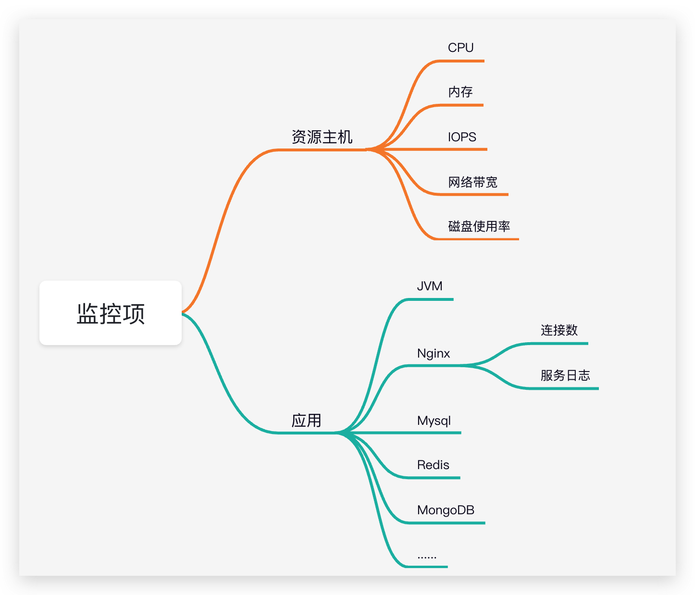

背景
即有系统架构
该系统是一个电商微商城系统，采用微服务架构，下面是该系统的简单系统架构：
其中黄色部分是公有云的saas服务。
业务场景
预售
活动商品，定时支付定金，参与优惠打折活动。
核心流程如下：
首先用户进入活动首页，在活动首页浏览商品，然后选择心仪商品进入商品详情，点击支付打开收银台，选择支付方式进行支付。支付回调消息发送到mq，相关系统进行消息消费。
付尾款
定时支付尾款，支付尾款前100名获得免单机会。
核心流程如下：
从支付入口，点击支付获取收银台信息，用户选择支付方式发起支付，支付回调消息发送到mq,相关系统进行消息消费。
系统性能问题
整个系统架构中，在对Nginx,Node,Kong，应用服务都做了横向扩展后，用阿里云PTS进行压测，TPS在一千左右，效果不尽人意。
之前采用限流方案： 使用Nginx+Lua+Redis脚本实现排队机制，每次最多放行8K用户，系统就达到极限。其余用户返回活动火爆进行中页面。用户5分钟浏览不下单踢出队列，加载新的用户进来。
目标： 经过半个月时间到优化，四万以上用户可正常访问网站，并进行商品的抢购。
分析过程和解决方案
我们需要知道自己资源的各项配置情况，列出配置清单。然后基于当前系统架构，分层次进行压测，对下游各层次资源使用情况进行监控（CPU，内存，磁盘IO，带宽），同时对使用应用的核心指标进行监控。
初步诊断和优化
web访问活动首页，F12开发者选项查看服务调用Time以及Size的大小，找出RT比较高的请求
对于静态资源,比如JS，CSS，IMAGE等查看是否压缩，并用CDN进行缓存。
发现问题： 部分JS没压缩，部分静态资源没有采用CDN，对这些静态资源进行优化。
- 对于动态请求，分析每个请求接口设计，以及对代码进行Review。
发现问题：
- 活动首页一个接口一次查询所有的活动商品，展示用户一屏可看到的商品数量，后面商品进行懒加载。
- 活动首页调用购物车，购物车size为100，首页不用查询购物车，将其后移。
- 查询商品详情页的同时，将商品评价同步返回。将商品详情和商品评论进行拆分。
- 对查询的Mongodb,PostgreSQL语句检查索引。不合理的进行改正。
不断压测，不断优化
制定压测计划，分层次进行压测，压测中发现问题，然后解决问题。
在压测的同时，我们需要去去关注监控项波动情况。每个监控项出现异常我们要去分析异常的原因。
关于资源主机，例如：CPU异常，我们需要去关注是异常进程还是正常进程，然后进一步分析；内存升高我们需要去分析内存升高的原因；内网带宽和公网带宽在高并发时可承载的最大流量是多少；IOPS过高是什么原因引起的，会不会是频繁的日志输出；
应用的监控，例如：JVM GC频率，各代内存使用情况；MongoDB连接数，OPS次数等这些也是需要我们去进行监控的。

下面主要针对Node服务问题和Redis展开分析。
压测主要问题
Node服务
现象： 压测活动首页，TPS200左右，Node服务CPU几乎跑满，带宽未跑满。但是下游应用服务负载正常。
初步分析： Node主线程有耗时操作或阻塞操作，导致CPU使用率很高。
问题发现： 每次请求Node都会对活动首页进行渲染
初步解决： 使用Node缓存，对服务端渲染的页面进行缓存。
问题再起： 再次压测，TPS提升了翻了一倍，问题依旧存在，突然发现Node带宽打满，经过分析，Node请求后端服务未经过内网，因为业务的关系Node访问后端走的是公网。思考是否可以将数据更靠近用户，减少中间IO操作。
后续解决： 使用Nginx静态化缓存。TPS十倍以上提升。
Redis
现象： Redis Cluster部分分片CPU接近100%，OPS达到顶峰。
分析一: 查看慢查询日志，发现有KEYS命令。
解决一: 排除代码中使用keys命令；
之前检查过keys命令，这次发现的是框架中使用的原因。会话管理有使用 shiro-redis框架， SessionDAO#getActiveSessions方法中调用；升级版本，新版本进行了改进，使用了scan.
分析二： 统计问题Redis实例压测期间key的访问情况
问题发现： 每次执行一个命令前都会Ping一次。
解决二: 减少ping的次数
分析三： 部分分片OPS过高问题
问题发现： 活动商品key不是均匀分配在16个主机实例上，总共16个商品，12个商品都在一台机器，查询一个活动详情页一个商品需要访问Redis 4次（商品详情和库存各2次）按照5000并发，12*4*5000=240000，单台Redis CPU负载满载，OPS达到满载。RT时间变长
解决三：
- 将活动商品分散在多个集群切片上
- 本地缓存Ehcache，缺点是数据一致性不能得到及时保证
- Redis读写分离
- 减少请求次数
商品详情和库存进行拆分，活动首页通过冗余字段解决商品是否售罄问题，火爆页面只查询商品详情
总结